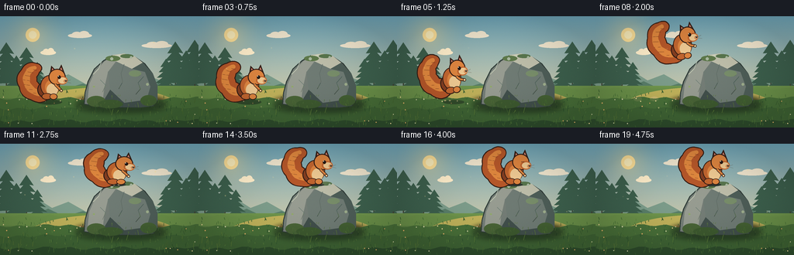
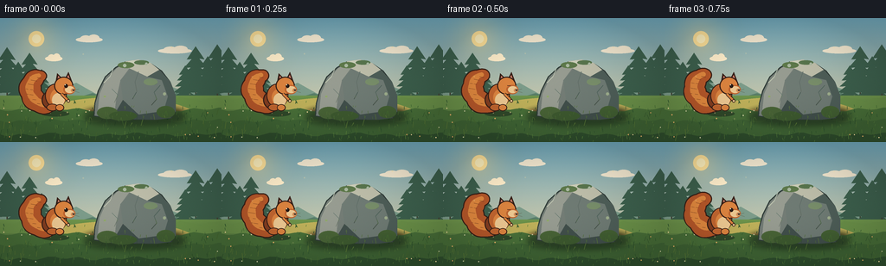

CODING AGENTS AS PIXEL WORLD MODELS
traex/DeepSeek-V4.1-Flash · dynamic_spatial_relationship_0025
点击播放 · 原生 RGB 像素
逐轮保存的候选
回放视频、检查图与代码变化。
每份候选均可单独播放。实际图片检查记录在下方工具轨迹中。
候选 01播放与检查图
点击播放 · 原生 RGB 像素


展开代码变化
--- 上一保存版本
+++ 本次保存版本
@@ -0,0 +1,513 @@
+from pathlib import Path
+import math
+import random
+
+import numpy as np
+from PIL import Image, ImageDraw, ImageFilter
+
+import artifact_io
+
+
+W, H = 256, 144
+FRAMES, FPS = 20, 4
+S = 4
+ROOT = Path(__file__).resolve().parent
+
+
+def scaled_xy(x, y):
+ return round(x * S), round(y * S)
+
+
+def scaled_box(box):
+ return tuple(round(value * S) for value in box)
+
+
+def scaled_points(points):
+ return [scaled_xy(x, y) for x, y in points]
+
+
+def polygon(draw, points, fill, outline=None, width=1):
+ pts = scaled_points(points)
+ draw.polygon(pts, fill=fill)
+ if outline is not None:
+ draw.line(pts + [pts[0]], fill=outline, width=round(width * S), joint="curve")
+
+
+def ellipse(draw, box, fill, outline=None, width=1):
+ draw.ellipse(
+ scaled_box(box),
+ fill=fill,
+ outline=outline,
+ width=round(width * S) if outline is not None else 0,
+ )
+
+
+def line(draw, points, fill, width=1):
+ draw.line(scaled_points(points), fill=fill, width=round(width * S), joint="curve")
+
+
+def gradient_array(top, bottom, height, width=W * S):
+ top = np.array(top, dtype=np.float32)
+ bottom = np.array(bottom, dtype=np.float32)
+ blend = np.linspace(0.0, 1.0, height, dtype=np.float32)[:, None, None]
+ values = top[None, None, :] * (1.0 - blend) + bottom[None, None, :] * blend
+ return np.broadcast_to(values, (height, width, 3)).astype(np.uint8)
+
+
+def add_soft_glow(image, center, radius, color, strength):
+ cx, cy = center
+ yy, xx = np.mgrid[0 : image.shape[0], 0 : image.shape[1]]
+ distance = np.sqrt((xx - cx * S) ** 2 + (yy - cy * S) ** 2) / (radius * S)
+ alpha = np.clip(1.0 - distance, 0.0, 1.0) ** 2 * strength
+ base = image.astype(np.float32)
+ tint = np.array(color, dtype=np.float32)
+ base[..., :3] = base[..., :3] * (1.0 - alpha[..., None]) + tint * alpha[..., None]
+ return base.astype(np.uint8)
+
+
+def pine(draw, x, base_y, height, color, trunk_color):
+ width = height * 0.38
+ line(draw, [(x, base_y - height * 0.82), (x, base_y)], trunk_color, 1.4)
+ tiers = 5
+ for tier in range(tiers):
+ t = tier / max(1, tiers - 1)
+ y = base_y - height * (0.18 + 0.16 * tier)
+ tier_w = width * (1.0 - 0.56 * t)
+ top_y = y - height * 0.25
+ polygon(
+ draw,
+ [(x - tier_w, y), (x, top_y), (x + tier_w, y), (x + tier_w * 0.48, y - 1.0)],
+ color,
+ )
+
+
+def draw_cloud(draw, x, y, width, color):
+ ellipse(draw, (x - width * 0.50, y - 3.0, x + width * 0.50, y + 3.0), color)
+ ellipse(draw, (x - width * 0.34, y - 5.0, x + width * 0.08, y + 2.5), color)
+ ellipse(draw, (x - width * 0.04, y - 6.0, x + width * 0.38, y + 2.0), color)
+
+
+def make_background():
+ sky = gradient_array((111, 166, 185), (244, 216, 165), H * S)
+ image = Image.fromarray(sky, "RGB").convert("RGBA")
+ image = Image.fromarray(add_soft_glow(np.asarray(image), (42, 24), 52, (255, 226, 153), 0.45), "RGBA")
+ draw = ImageDraw.Draw(image, "RGBA")
+
+ # Warm sun and high, quiet clouds.
+ ellipse(draw, (33, 15, 51, 33), (255, 226, 154, 200))
+ ellipse(draw, (37, 19, 47, 29), (255, 241, 190, 235))
+ draw_cloud(draw, 103, 25, 31, (242, 231, 207, 100))
+ draw_cloud(draw, 202, 38, 39, (242, 231, 207, 72))
+ draw_cloud(draw, 62, 47, 20, (255, 238, 203, 70))
+
+ # Low-contrast mountain layers keep the foreground readable.
+ polygon(
+ draw,
+ [(-8, 91), (13, 78), (29, 84), (48, 71), (67, 83), (88, 75), (111, 88),
+ (136, 76), (161, 88), (184, 74), (209, 84), (235, 73), (264, 87), (264, 106), (-8, 106)],
+ (125, 157, 139, 150),
+ )
+ polygon(
+ draw,
+ [(-8, 98), (18, 88), (39, 94), (62, 84), (83, 94), (107, 87), (132, 97),
+ (157, 86), (181, 95), (204, 87), (230, 96), (264, 87), (264, 108), (-8, 108)],
+ (89, 126, 105, 178),
+ )
+
+ # Distant conifer silhouettes frame the action without hiding it.
+ distant = (61, 96, 77, 175)
+ for x, base, height in [
+ (8, 98, 60), (21, 101, 47), (34, 99, 55), (48, 102, 40),
+ (214, 101, 43), (226, 98, 61), (240, 102, 54), (251, 100, 65),
+ ]:
+ pine(draw, x, base, height, distant, (66, 69, 54, 155))
+
+ # Meadow gradient and irregular horizon.
+ ground = gradient_array((113, 151, 77), (55, 91, 50), 54 * S)
+ ground_image = Image.fromarray(ground, "RGB").convert("RGBA")
+ image.paste(ground_image, (0, 90 * S))
+ draw = ImageDraw.Draw(image, "RGBA")
+ horizon = [(-2, 99)]
+ for x in range(0, 259, 8):
+ horizon.append((x, 94 + 2.5 * math.sin(x * 0.17) + 1.8 * math.sin(x * 0.39)))
+ horizon.extend([(260, 106), (-2, 106)])
+ polygon(draw, horizon, (107, 145, 73, 230))
+
+ # Layered grass bands and a sunlit clearing.
+ draw.ellipse(scaled_box((35, 92, 232, 146)), fill=(192, 178, 91, 26))
+ draw.ellipse(scaled_box((77, 101, 214, 142)), fill=(230, 195, 103, 23))
+ for y, color in [(106, (73, 112, 57, 105)), (119, (64, 101, 53, 120)), (135, (47, 78, 45, 135))]:
+ points = [(-4, y + 3)]
+ for x in range(0, 261, 7):
+ points.append((x, y + 1.5 * math.sin(x * 0.19) + 1.0 * math.sin(x * 0.07)))
+ points.extend([(260, 146), (-4, 146)])
+ polygon(draw, points, color)
+
+ rng = random.Random(28)
+ # Fine meadow texture and flowers.
+ for _ in range(220):
+ x = rng.uniform(0, W)
+ y = rng.uniform(98, 144)
+ height = rng.uniform(1.2, 5.2) * (0.65 + (y - 98) / 85)
+ lean = rng.uniform(-1.0, 1.0)
+ green = rng.choice([(62, 103, 50, 120), (87, 127, 60, 120), (45, 83, 45, 130)])
+ line(draw, [(x, y), (x + lean, y - height)], green, rng.uniform(0.35, 0.75))
+ for _ in range(34):
+ x = rng.uniform(4, 252)
+ y = rng.uniform(104, 141)
+ if 108 < x < 207 and y > 110:
+ continue
+ color = rng.choice([(247, 226, 159, 200), (232, 179, 104, 190), (220, 219, 174, 170)])
+ ellipse(draw, (x - 0.7, y - 0.7, x + 0.7, y + 0.7), color)
+
+ # Rock's grounded shadow stays beneath the squirrel's animated shadow.
+ shadow = Image.new("RGBA", image.size, (0, 0, 0, 0))
+ sd = ImageDraw.Draw(shadow, "RGBA")
+ ellipse(sd, (98, 106, 214, 123), (28, 40, 31, 110))
+ shadow = shadow.filter(ImageFilter.GaussianBlur(4 * S))
+ image.alpha_composite(shadow)
+
+ return image
+
+
+def shrink_polygon(points, amount):
+ cx = sum(p[0] for p in points) / len(points)
+ cy = sum(p[1] for p in points) / len(points)
+ out = []
+ for x, y in points:
+ dx, dy = x - cx, y - cy
+ length = max(0.001, math.hypot(dx, dy))
+ out.append((x - dx / length * amount, y - dy / length * amount))
+ return out
+
+
+def make_rock_layer():
+ layer = Image.new("RGBA", (W * S, H * S), (0, 0, 0, 0))
+ draw = ImageDraw.Draw(layer, "RGBA")
+ outline = [
+ (108, 114), (109, 99), (113, 84), (121, 68), (133, 57), (145, 50),
+ (160, 48), (174, 52), (187, 61), (197, 74), (203, 90), (203, 109),
+ (198, 116), (181, 118), (155, 118), (128, 117),
+ ]
+ polygon(draw, outline, (48, 60, 56, 255))
+ body = shrink_polygon(outline, 1.4)
+ polygon(draw, body, (116, 125, 118, 255))
+
+ # Faceted planes: warm upper-left light, cool lower-right shadow.
+ polygon(draw, [(113, 108), (115, 88), (122, 72), (135, 58), (146, 52),
+ (151, 56), (139, 72), (134, 94), (132, 112)], (151, 156, 145, 255))
+ polygon(draw, [(145, 50), (160, 48), (174, 52), (184, 60), (170, 68),
+ (151, 59), (143, 55)], (190, 190, 170, 255))
+ polygon(draw, [(139, 72), (151, 59), (170, 68), (187, 72), (194, 91),
+ (189, 108), (160, 112), (142, 95)], (111, 123, 116, 255))
+ polygon(draw, [(170, 68), (184, 60), (197, 74), (203, 90), (203, 109),
+ (189, 108), (194, 91), (187, 72)], (78, 94, 88, 255))
+ polygon(draw, [(128, 117), (132, 112), (142, 95), (160, 112), (189, 108),
+ (198, 116), (181, 118)], (65, 79, 75, 255))
+
+ # Cracks and small chipped planes.
+ line(draw, [(160, 62), (156, 74), (158, 85), (153, 94)], (63, 76, 73, 180), 0.8)
+ line(draw, [(185, 78), (178, 86), (181, 94), (175, 101)], (66, 80, 76, 155), 0.65)
+ line(draw, [(129, 82), (136, 89), (132, 98)], (92, 105, 99, 150), 0.55)
+ polygon(draw, [(146, 51), (154, 49), (158, 50), (151, 55)], (223, 218, 191, 185))
+ line(draw, [(120, 75), (127, 68), (131, 58)], (207, 205, 179, 120), 0.8)
+
+ # Moss and lichen anchor the boulder in the meadow.
+ for box, color in [
+ ((112, 103, 136, 117), (73, 100, 55, 235)),
+ ((126, 108, 158, 119), (62, 91, 48, 225)),
+ ((181, 102, 202, 116), (67, 96, 51, 220)),
+ ((136, 51, 155, 58), (83, 111, 59, 220)),
+ ((155, 49, 172, 54), (73, 103, 55, 210)),
+ ((166, 70, 182, 78), (79, 107, 59, 150)),
+ ]:
+ draw.ellipse(scaled_box(box), fill=color)
+ rng = random.Random(14)
+ for _ in range(38):
+ x = rng.uniform(112, 201)
+ y = rng.uniform(99, 118)
+ if y < 111 and rng.random() < 0.7:
+ continue
+ line(draw, [(x, y), (x + rng.uniform(-1.3, 1.3), y - rng.uniform(1.5, 4.0))],
+ (91, 123, 61, 170), rng.uniform(0.35, 0.65))
+ for x, y, r in [(144, 55, 2.1), (169, 53, 1.4), (190, 88, 1.8), (121, 91, 1.2)]:
+ ellipse(draw, (x - r, y - r, x + r, y + r), (178, 184, 143, 125))
+
+ return layer
+
+
+def make_foreground_layer():
+ layer = Image.new("RGBA", (W * S, H * S), (0, 0, 0, 0))
+ draw = ImageDraw.Draw(layer, "RGBA")
+ rng = random.Random(73)
+ # Tall grass along the boulder base and foreground corners.
+ for _ in range(74):
+ if rng.random() < 0.60:
+ x = rng.uniform(95, 218)
+ else:
+ x = rng.choice([rng.uniform(0, 45), rng.uniform(220, 256)])
+ y = rng.uniform(111, 143)
+ h = rng.uniform(3.0, 9.0) * (0.65 + (y - 105) / 80)
+ lean = rng.uniform(-2.2, 2.2)
+ color = rng.choice([(48, 83, 43, 210), (70, 105, 49, 220), (91, 122, 54, 195)])
+ line(draw, [(x, y), (x + lean * 0.45, y - h * 0.55), (x + lean, y - h)], color,
+ rng.uniform(0.45, 0.8))
+ return layer
+
+
+def cubic(p0, p1, p2, p3, t):
+ u = 1.0 - t
+ return (
+ u**3 * p0[0] + 3 * u**2 * t * p1[0] + 3 * u * t**2 * p2[0] + t**3 * p3[0],
+ u**3 * p0[1] + 3 * u**2 * t * p1[1] + 3 * u * t**2 * p2[1] + t**3 * p3[1],
+ )
+
+
+def draw_squirrel(pose):
+ size = 120 * S
+ image = Image.new("RGBA", (size, size), (0, 0, 0, 0))
+ draw = ImageDraw.Draw(image, "RGBA")
+
+ outline = (54, 31, 23, 255)
+ tail_dark = (95, 45, 25, 255)
+ tail = (183, 88, 42, 255)
+ tail_light = (226, 137, 63, 255)
+ body = (194, 102, 48, 255)
+ body_light = (222, 133, 64, 255)
+ shadow = (132, 62, 33, 255)
+ cream = (239, 202, 147, 255)
+ pink = (214, 133, 112, 255)
+
+ lift = pose.get("tail_lift", 0.0)
+ swing = pose.get("tail_swing", 0.0)
+ p0 = (63, 101)
+ p1 = (34 + swing, 101)
+ p2 = (33 + swing * 1.5, 69 - lift)
+ p3 = (54 + swing * 0.7, 67 - lift * 0.72)
+ samples = []
+ for index in range(34):
+ t = index / 33
+ x, y = cubic(p0, p1, p2, p3, t)
+ radius = 4.0 + 7.4 * math.sin(math.pi * t) ** 0.58
+ radius += 2.4 * math.exp(-((t - 0.12) / 0.16) ** 2)
+ radius *= 1.0 + 0.08 * math.sin(t * 25.0 + pose.get("phase", 0))
+ samples.append((x, y, radius))
+
+ for x, y, r in samples:
+ ellipse(draw, (x - r - 1.2, y - r - 1.2, x + r + 1.2, y + r + 1.2), outline)
+ for x, y, r in samples:
+ ellipse(draw, (x - r, y - r, x + r, y + r), tail)
+ for index, (x, y, r) in enumerate(samples[3:-2]):
+ rr = max(0.6, r * 0.38)
+ ellipse(draw, (x - rr - 0.7, y - rr - 1.1, x + rr - 0.7, y + rr - 1.1), tail_light)
+ if index % 4 == 0:
+ line(draw, [(x - r * 0.40, y + 1.0), (x + r * 0.28, y + 2.2)], tail_dark, 0.55)
+
+ # Ears sit behind the head.
+ for points, inner in [
+ ([(69, 75), (71, 64), (79, 72)], [(71.2, 72.5), (72.3, 67.0), (76.5, 71.3)]),
+ ([(79, 72), (84, 62.5), (88, 73)], [(81.2, 71.2), (83.8, 66.0), (86.0, 71.8)]),
+ ]:
+ polygon(draw, points, outline)
+ polygon(draw, inner, pink)
+
+ # Haunch and torso.
+ ellipse(draw, (53, 84, 75, 106), outline)
+ ellipse(draw, (54.2, 85.2, 73.8, 104.8), shadow)
+ ellipse(draw, (57, 76, 82, 104), outline)
+ ellipse(draw, (58.1, 77.1, 80.9, 102.9), body)
+ ellipse(draw, (63, 82, 81, 102), body_light)
+ ellipse(draw, (65, 87, 79.5, 103), cream)
+
+ # Head, muzzle, and cheek.
+ ellipse(draw, (67.5, 68.0, 89.5, 89.0), outline)
+ ellipse(draw, (68.7, 69.2, 88.3, 87.8), body_light)
+ ellipse(draw, (78, 77.5, 92.0, 88.3), body)
+ ellipse(draw, (80.0, 79.0, 91.0, 87.0), cream)
+ ellipse(draw, (86.7, 81.8, 91.5, 86.0), (216, 148, 93, 255))
+
+ # Limbs are kept simple and readable at 256x144.
+ reach = pose.get("arm_reach", 0.0)
+ paw_x = 84.0 + reach * 3.0
+ paw_y = 96.0 - reach * 3.0
+ line(draw, [(76, 88), (80, 92), (paw_x, paw_y)], outline, 3.8)
+ line(draw, [(76, 88), (80, 92), (paw_x, paw_y)], body_light, 2.2)
+ ellipse(draw, (paw_x - 2.1, paw_y - 1.8, paw_x + 1.8, paw_y + 1.9), cream, outline, 0.7)
+
+ foot_spread = pose.get("foot_spread", 0.0)
+ ellipse(draw, (58.5 - foot_spread, 99.5, 72.5, 108.0), outline)
+ ellipse(draw, (59.5 - foot_spread, 100.3, 71.3, 107.1), body)
+ ellipse(draw, (69.0, 100.0, 79.0 + foot_spread, 108.0), outline)
+ ellipse(draw, (69.7, 100.8, 78.0 + foot_spread, 107.1), body_light)
+
+ # Eye, nose, and whiskers carry the squirrel's expression.
+ if pose.get("eye_open", 1.0) > 0.4:
+ ellipse(draw, (79.2, 76.5, 83.2, 81.0), (36, 24, 20, 255))
+ ellipse(draw, (79.7, 77.0, 80.8, 78.1), (255, 249, 220, 255))
+ else:
+ line(draw, [(79.2, 78.3), (82.8, 78.5)], outline, 0.8)
+ ellipse(draw, (88.7, 82.2, 91.1, 84.5), (44, 28, 22, 255))
+ ellipse(draw, (89.6, 82.6, 90.3, 83.2), (255, 226, 190, 210))
+ line(draw, [(90.2, 84.1), (96.0, 82.3)], (73, 47, 34, 165), 0.35)
+ line(draw, [(90.0, 84.5), (96.5, 86.4)], (73, 47, 34, 145), 0.35)
+
+ return image
+
+
+def transformed_squirrel(pose):
+ sprite = draw_squirrel(pose)
+ anchor = (68 * S, 108 * S)
+ angle = pose.get("angle", 0.0)
+ if angle:
+ sprite = sprite.rotate(angle, resample=Image.Resampling.BICUBIC, center=anchor)
+
+ base_scale = 0.78
+ sx = base_scale * pose.get("sx", 1.0)
+ sy = base_scale * pose.get("sy", 1.0)
+ if abs(sx - base_scale) > 1e-5 or abs(sy - base_scale) > 1e-5:
+ ax, ay = anchor
+ sprite = sprite.transform(
+ sprite.size,
+ Image.Transform.AFFINE,
+ (base_scale / sx, 0, ax * (1 - base_scale / sx),
+ 0, base_scale / sy, ay * (1 - base_scale / sy)),
+ resample=Image.Resampling.BICUBIC,
+ )
+ return sprite
+
+
+def draw_ground_shadow(layer, x, y, scale=1.0, alpha=92):
+ draw = ImageDraw.Draw(layer, "RGBA")
+ width = 16.0 * scale
+ height = 3.2 * scale
+ ellipse(draw, (x - width, y - height, x + width, y + height), (30, 43, 31, alpha))
+
+
+def draw_dust(layer, x, y, progress, landing=False):
+ draw = ImageDraw.Draw(layer, "RGBA")
+ if progress < 0 or progress > 1:
+ return
+ alpha = int((1.0 - progress) * 130)
+ radius = 2.0 + progress * 8.0
+ for side in (-1, 1):
+ dx = side * (3.0 + progress * 9.0)
+ dy = -progress * (4.0 if landing else 2.5)
+ ellipse(draw, (x + dx - radius * 0.6, y + dy - radius * 0.35,
+ x + dx + radius * 0.6, y + dy + radius * 0.35),
+ (216, 191, 137, alpha))
+ if landing:
+ for side in (-1, 1):
+ dx = side * (2.5 + progress * 5.5)
+ line(draw, [(x + dx, y - 1), (x + dx + side * 2.5, y - 5 - progress * 2)],
+ (197, 174, 122, alpha), 0.55)
+
+
+def compose_frame(background, rock, foreground, pose, frame_index):
+ canvas = background.copy()
+ air = pose.get("air", 0.0)
+ x, y = pose["x"], pose["y"]
+
+ # Animated shadow stays on the meadow until the squirrel reaches the rock.
+ shadow_layer = Image.new("RGBA", canvas.size, (0, 0, 0, 0))
+ shadow_scale = max(0.42, 1.0 - air * 0.035)
+ if x < 108:
+ draw_ground_shadow(shadow_layer, x + 1.0, 111.0, shadow_scale, int(90 * (1.0 - air * 0.018)))
+ canvas.alpha_composite(shadow_layer)
+ canvas.alpha_composite(rock)
+
+ dust = Image.new("RGBA", canvas.size, (0, 0, 0, 0))
+ if 5 <= frame_index <= 8:
+ draw_dust(dust, 65, 109, (frame_index - 5) / 3.5)
+ if 11 <= frame_index <= 14:
+ draw_dust(dust, 150, 53, (frame_index - 11) / 3.5, landing=True)
+
+ # A small contact shadow on the stone reinforces the landing.
+ if frame_index >= 11:
+ d = ImageDraw.Draw(canvas, "RGBA")
+ ellipse(d, (x - 10, y - 2.1, x + 13, y + 2.0), (47, 56, 51, 100))
+
+ canvas.alpha_composite(dust)
+ sprite = transformed_squirrel(pose)
+ left = round((x - 68) * S)
+ top = round((y - 108) * S)
+ canvas.alpha_composite(sprite, (left, top))
+ canvas.alpha_composite(foreground)
+
+ # Airborne pollen and a few drifting seeds add depth without competing with the action.
+ atmosphere = Image.new("RGBA", canvas.size, (0, 0, 0, 0))
+ ad = ImageDraw.Draw(atmosphere, "RGBA")
+ for i, (bx, by, phase) in enumerate([
+ (34, 67, 0.2), (94, 42, 1.8), (198, 35, 3.0), (221, 89, 4.1), (82, 118, 2.4),
+ ]):
+ px = bx + 2.2 * math.sin(frame_index * 0.45 + phase)
+ py = by + 1.2 * math.cos(frame_index * 0.33 + phase)
+ glow = 0.55 + 0.35 * math.sin(frame_index * 0.6 + i)
+ ellipse(ad, (px - 0.8, py - 0.8, px + 0.8, py + 0.8), (255, 231, 163, int(80 * glow)))
+ canvas.alpha_composite(atmosphere)
+
+ # Gentle vignette and fine deterministic grain.
+ arr = np.asarray(canvas.convert("RGB")).astype(np.float32)
+ yy, xx = np.mgrid[0 : arr.shape[0], 0 : arr.shape[1]]
+ nx = (xx - arr.shape[1] / 2) / (arr.shape[1] / 2)
+ ny = (yy - arr.shape[0] / 2) / (arr.shape[0] / 2)
+ vignette = np.clip(1.0 - 0.14 * (nx * nx + ny * ny), 0.84, 1.0)[..., None]
+ arr *= vignette
+ rng = np.random.default_rng(1000 + frame_index)
+ arr += rng.normal(0.0, 1.15, arr.shape)
+ frame = np.clip(arr, 0, 255).astype(np.uint8)
+ frame = np.asarray(
+ Image.fromarray(frame, "RGB").resize((W, H), Image.Resampling.LANCZOS)
+ )
+ return frame
+
+
+def main():
+ background = make_background()
+ rock = make_rock_layer()
+ foreground = make_foreground_layer()
+
+ poses = [
+ {"x": 63, "y": 108, "angle": 0, "tail_lift": 0.0, "tail_swing": 0.0, "phase": 0},
+ {"x": 63, "y": 108, "angle": 0, "tail_lift": 0.7, "tail_swing": 0.9, "phase": 1},
+ {"x": 63, "y": 108, "angle": 0, "tail_lift": 1.2, "tail_swing": -0.5, "eye_open": 0.0, "phase": 2},
+ {"x": 64, "y": 108, "angle": 0, "tail_lift": 1.8, "tail_swing": -1.1, "phase": 3},
+ {"x": 66, "y": 109, "angle": 2, "sx": 1.08, "sy": 0.88, "tail_lift": -1.0,
+ "tail_swing": 1.0, "phase": 4},
+ {"x": 72, "y": 100, "angle": 9, "sx": 0.96, "sy": 1.06, "tail_lift": 4.0,
+ "tail_swing": -2.4, "arm_reach": 0.7, "air": 4.0, "phase": 5},
+ {"x": 83, "y": 85, "angle": 14, "sx": 0.94, "sy": 1.08, "tail_lift": 6.5,
+ "tail_swing": -3.5, "arm_reach": 1.0, "air": 11.0, "phase": 6},
+ {"x": 98, "y": 69, "angle": 15, "sx": 0.95, "sy": 1.06, "tail_lift": 7.5,
+ "tail_swing": -4.0, "arm_reach": 0.9, "air": 16.0, "phase": 7},
+ {"x": 114, "y": 56, "angle": 11, "sx": 0.97, "sy": 1.03, "tail_lift": 6.5,
+ "tail_swing": -3.3, "arm_reach": 0.65, "air": 20.0, "phase": 8},
+ {"x": 130, "y": 48, "angle": 5, "sx": 0.98, "sy": 1.02, "tail_lift": 4.0,
+ "tail_swing": -2.0, "arm_reach": 0.35, "air": 21.0, "phase": 9},
+ {"x": 143, "y": 48, "angle": 1, "tail_lift": 2.0, "tail_swing": -0.8,
+ "arm_reach": 0.1, "air": 19.0, "phase": 10},
+ {"x": 149, "y": 53, "angle": 0, "sx": 1.05, "sy": 0.92, "tail_lift": 2.8,
+ "tail_swing": 1.2, "foot_spread": 1.2, "phase": 11},
+ {"x": 149, "y": 53, "angle": 0, "sx": 1.10, "sy": 0.87, "tail_lift": 3.2,
+ "tail_swing": 1.8, "foot_spread": 1.5, "phase": 12},
+ {"x": 149, "y": 53, "angle": 0, "sx": 0.98, "sy": 1.02, "tail_lift": 1.6,
+ "tail_swing": 0.6, "phase": 13},
+ {"x": 149, "y": 53, "angle": 0, "tail_lift": 0.6, "tail_swing": -0.6, "phase": 14},
+ {"x": 149, "y": 53, "angle": 0, "tail_lift": 0.2, "tail_swing": 0.0, "phase": 15},
+ {"x": 149, "y": 53, "angle": 0, "tail_lift": 0.8, "tail_swing": 0.8,
+ "eye_open": 0.0, "phase": 16},
+ {"x": 149, "y": 53, "angle": 0, "tail_lift": 1.3, "tail_swing": 1.2, "phase": 17},
+ {"x": 149, "y": 53, "angle": 0, "tail_lift": 1.5, "tail_swing": 0.3, "phase": 18},
+ {"x": 149, "y": 53, "angle": 0, "tail_lift": 0.8, "tail_swing": -0.8, "phase": 19},
+ ]
+
+ frames = [
+ compose_frame(background, rock, foreground, pose, index)
+ for index, pose in enumerate(poses)
+ ]
+ frames = np.stack(frames).astype(np.uint8)
+ assert frames.shape == (FRAMES, H, W, 3)
+ artifact_io.save(frames, ROOT)
+
+
+if __name__ == "__main__":
+ main()
可观测工具轨迹
实际执行的命令与返回图片。
命令 1exit 0
/bin/bash -c "pwd && rg --files -g 'prompt.txt' -g 'GENERATION_RULES.md' -g 'task_spec.json' -g '"'!node_modules'"' -g '"'!vendor'"'"
命令 2exit 0
/bin/bash -c 'ls -la'
命令 3exit 1
/bin/bash -c 'command -v ffmpeg; command -v python3; command -v blender; command -v node; command -v convert; command -v magick'
命令 4exit 0
/bin/bash -c 'cat prompt.txt'
命令 5exit 0
/bin/bash -c 'cat GENERATION_RULES.md'
命令 6exit 0
/bin/bash -c 'cat task_spec.json'
命令 7exit 0
/bin/bash -c "sed -n '1,240p' artifact_io.py"
命令 8exit 0
/bin/bash -c "sed -n '1,260p' player_template.html"
命令 9exit 1
/bin/bash -c 'python3 generate.py'
命令 10exit 0
/bin/bash -c 'python3 generate.py'
命令 11exit 127
/bin/bash -c 'file inspection.png frames/00.png frames/19.png pixels.npz index.html && ls -lh inspection.png transition_check.png frames/00.png index.html pixels.npz'
命令 12exit 1
/bin/bash -c 'command -v chafa; command -v viu; command -v img2txt; command -v jp2; command -v ffplay; command -v chromium; command -v google-chrome'
命令 13exit 0
/bin/bash -c "python3 - <<'PY'
from PIL import Image
import numpy as np
for name in ['frames/00.png','frames/05.png','frames/08.png','frames/11.png','frames/19.png','inspection.png']:
im=Image.open(name)
a=np.asarray(im.convert('RGB'))
print(name, im.size, a.shape, a.mean(axis=(0,1)).round(1), a.min(), a.max(), len(np.unique(a.reshape(-1,3),axis=0)))
PY"命令 14exit 0
/bin/bash -c "python3 - <<'PY'
from PIL import Image
import numpy as np
for fi in [0,4,6,8,10,11,19]:
a=np.asarray(Image.open(f'frames/{fi:02d}.png').convert('RGB')).astype(int)
print('\\nFRAME',fi)
for y in range(36,120,3):
row=''
for x in range(20,220,3):
r,g,b=a[y:y+3,x:x+3].mean((0,1))
if r>g*1.27 and r>b*1.35 and r>90: c='S'
elif r>g*1.12 and g>b*1.15 and r>100: c='s'
elif abs(r-g)<13 and abs(g-b)<16 and 45<r<210: c='R'
elif g>r*1.08 and g>b*1.10 and g<145: c='#'
elif b>r*1.03 and g>r*1.12: c='"'^'"'
elif r>185 and g>155 and b<150: c='*'
else: c='.'
row+=c
print(row.rstrip())
PY"命令 15exit 0
/bin/bash -c "python3 - <<'PY'
import generate
from PIL import Image
import numpy as np
s=generate.draw_squirrel({'tail_lift':0,'tail_swing':0,'phase':0})
a=np.asarray(s)
alpha=a[...,3]
ys,xs=np.where(alpha>20)
print('sprite content bbox', xs.min(),ys.min(),xs.max(),ys.max())
# Downsample RGBA, output symbol based on exact alpha/color.
for y in range(56,116,2):
row=''
for x in range(26,102,1):
r,g,b,al=a[y,x]
if al<40:c=' '
elif r>205 and g>170 and b>130:c='o'
elif r>210 and g>100 and b<90:c='T'
elif r>160 and g>60 and b<70:c='S'
elif r>80 and g<80 and b<65:c='#'
else:c='.'
row+=c
print(row)
PY"命令 16exit 0
/bin/bash -c "python3 - <<'PY'
import generate
from PIL import Image
import numpy as np
s=generate.draw_squirrel({'tail_lift':0,'tail_swing':0,'phase':0}).resize((120,120), Image.Resampling.LANCZOS)
a=np.asarray(s)
for y in range(57,114,2):
row=''
for x in range(25,103,1):
r,g,b,al=a[y,x]
if al<55:c=' '
elif r>215 and g>170 and b>130:c='o'
elif r>205 and g>105 and b<95:c='T'
elif r>155 and g>60 and b<80:c='S'
elif r>75 and g<85 and b<75:c='#'
else:c='.'
row+=c
print(f'{y:03d}',row)
PY"命令 17exit 0
/bin/bash -c "python3 - <<'PY'
from PIL import Image
import numpy as np
for i in [0,4,6,8,10,11,19]:
a=np.asarray(Image.open(f'frames/{i:02d}.png')).astype(int)
r,g,b=a[...,0],a[...,1],a[...,2]
mask=(r>115)&(r>g*1.30)&(g>b*1.08)&(b<110)
ys,xs=np.where(mask)
print(i, 'orange bbox', (xs.min(),ys.min(),xs.max(),ys.max()) if len(xs) else None, 'count',len(xs))
PY"命令 18exit 0
/bin/bash -c "python3 - <<'PY'
import numpy as np
from PIL import Image
for i in range(20):
a=np.asarray(Image.open(f'frames/{i:02d}.png')).astype(np.int16)
if i==0: prev=a;continue
d=np.abs(a-prev).max(2)
print(i, 'changed', int((d>4).sum()), 'mean',round(float(d.mean()),2),'max',int(d.max()))
prev=a
PY"命令 19exit 0
/bin/bash -c "python3 - <<'PY'
from PIL import Image
import numpy as np
import generate
bg=generate.make_background(); rock=generate.make_rock_layer(); fg=generate.make_foreground_layer()
for fi,pose in [(0,{'x':63,'y':108,'angle':0,'tail_lift':0,'tail_swing':0,'phase':0}),(8,{'x':114,'y':56,'angle':11,'sx':.97,'sy':1.03,'tail_lift':6.5,'tail_swing':-3.3,'arm_reach':.65,'air':20,'phase':8}),(19,{'x':149,'y':53,'angle':0,'tail_lift':.8,'tail_swing':-.8,'phase':19})]:
s=generate.transformed_squirrel(pose)
a=np.asarray(s)
al=a[...,3]
ys,xs=np.where(al>30)
print(fi, 'sprite bbox',xs.min(),ys.min(),xs.max(),ys.max(),'opaque',len(xs),'canvas center',pose['x'],pose['y'])
# coverage and mean alpha
print(' alpha mean',round(float(al.mean()),2),'max',int(al.max()))
PY"命令 20exit 0
/bin/bash -c "python3 - <<'PY'
from pathlib import Path
from PIL import Image
import numpy as np
import json, re
root=Path('.')
frames=sorted((root/'frames').glob('*.png'))
assert len(frames)==20
shapes=[]; arrays=[]
for p in frames:
a=np.asarray(Image.open(p).convert('RGB'))
assert a.shape==(144,256,3), (p,a.shape)
arrays.append(a)
assert len(np.unique(np.stack(arrays),axis=0))>15
z=np.load('pixels.npz')
assert z['pixels'].shape==(144,256,20)
html=(root/'index.html').read_text()
assert 'window.__pixelReady' in html
m=re.search(r'const DATA=(\\{.*?\\}),W=', html)
assert m
data=json.loads(m.group(1))
assert data['frames']==20 and data['width']==256 and data['height']==144 and data['fps']==4
assert len(data['deltas'])==19
print('validated',len(frames),'frames',z['pixels'].shape,'deltas',len(data['deltas']))
print('all-frame mean/std', np.stack(arrays).mean().round(2), np.stack(arrays).std().round(2))
print('html bytes', (root/'index.html').stat().st_size, 'npz bytes', (root/'pixels.npz').stat().st_size)
PY"命令 21exit 0
/bin/bash -c 'du -sh . frames inspection.png transition_check.png pixels.npz index.html && ls -la'
保存候选 1 份；完成命令 21 次；可验证图片返回 0 张。原始 API 响应与完整日志保留在本地。